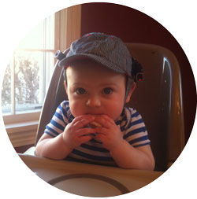

|

|

|

|
Bergelson Lab
Duke CHILD Studies
The Bergelson Lab (aka BLAB) is a part of the Department of Psychology and Neuroscience at Duke University.
The lab moved to Duke in 2016 from the University of Rochester, where we finished data collection in July 2016 for a longitudinal study called SEEDLingS (Study of Environmental Effects on Developing Linguistic Skills). You can read more about that work here.
Recent News
Paper accepted
Dr. Bergelson just had a paper accepted to Language Learning and Development: Semantic Specificity in One-Year-Olds’ Word Comprehension, Bergelson & Aslin, 2017.
Lab manager staying at Duke
Lab manager Shannon Dailey will be staying in the BLAB next year as a graduate student! She will continue working with Dr. Bergelson as she begins her PhD here at Duke this fall.